Вернуться на главную страницу →
Вернуться на главную страницу →
Что такое PostgreSQL. Установка сервера
Что такое PostgreSQL. Установка сервера
PostgreSQL является одной из наиболее популярных систем управления базами данных. Сам проект postgresql эволюционировал из другого проекта, который назывался Ingres. Формально развитие postgresql началось еще в 1986 году.
Тогда он назывался POSTGRES. А в 1996 году проект был переименован в PostgreSQL, что отражало больший акцент на SQL. И собственно 8 июля 1996 года состоялся первый релиз продукта.
PostgreSQL поддерживается для всех основных операционных систем - Windows, Linux, MacOS.
Официальный сайт проекта: https://www.postgresql.org/
PostgreSQL развивается как opensource. Исходный код проекта можно найти в репозитории на гитхабе по адресу: https://github.com/postgres/postgres
Установка
На странице https://www.postgresql.org/download/ можно найти ссылки на загрузку различных дистрибутивов для различных операционных систем. В частности, для загрузки дистрибутива для Windows, а также для MacOS надо перейти на страницу https://www.enterprisedb.com/downloads/postgres-postgresql-downloads и указать все необходимые опции для загрузки: версию postgres и операционную систему. В моем случае ОС - Windows 10 64х, поэтому я выбираю соответствующий пункт- Windows x86-64
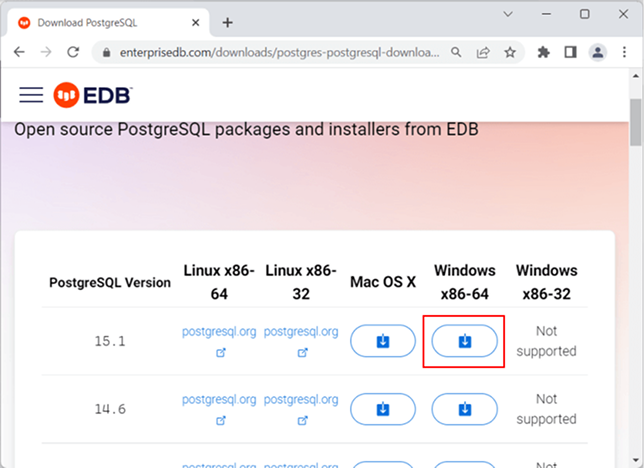Тут же можно найти дитрибутивы и для других систем.
Запустим программу установки:
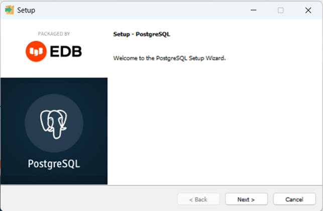На следующем экране необходимо будет указать папку для установки. Оставим папку по умолчанию и перейдем к следующему шагу:
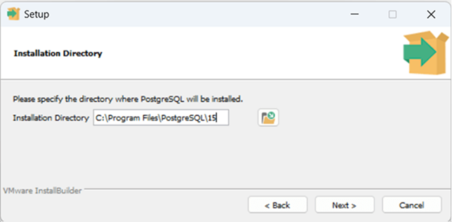Далее будет предложено выбрать компоненты для установки:
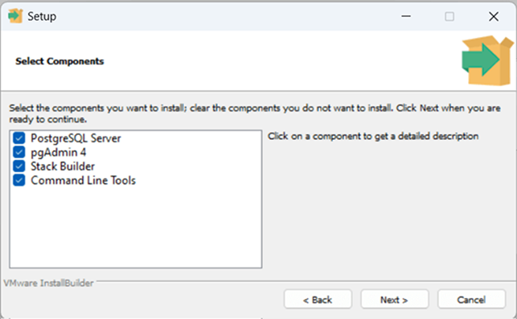Оставим все компоненты по умолчанию и перейдем к следующему шагу. Далее будет предложено выбрать папку, где будут храниться базы данных:
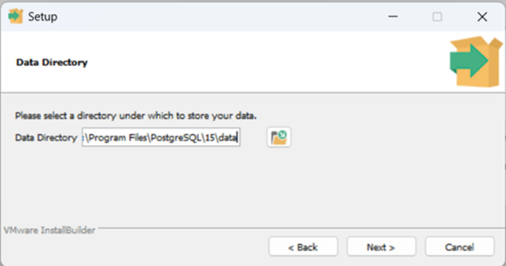Оставим путь по умолчанию и перейдем к следующему шагу. Затем необходимо будет установить пароль для суперпользователя postgres:
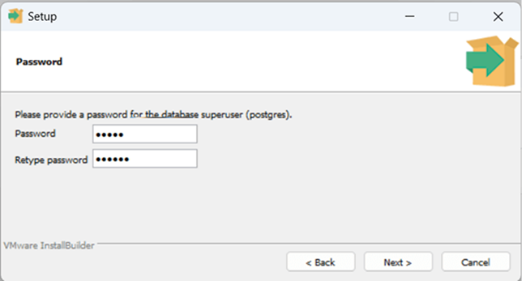При установке запомним пароль, так как он потребуется для подключения к серверу. Затем нужно будет установить порт, по которому будет запускаться сервер. Можно оставить порт по умолчанию:
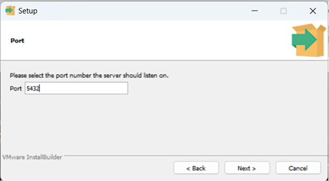Далее можно будет установить локаль сервера. Оставим установку по умолчанию:
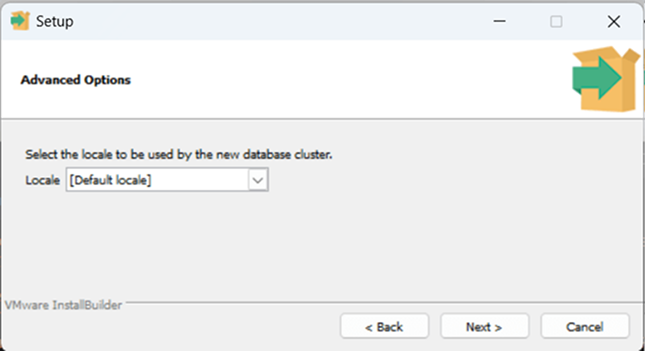После этого мы увидим сводку по всем настройкам:
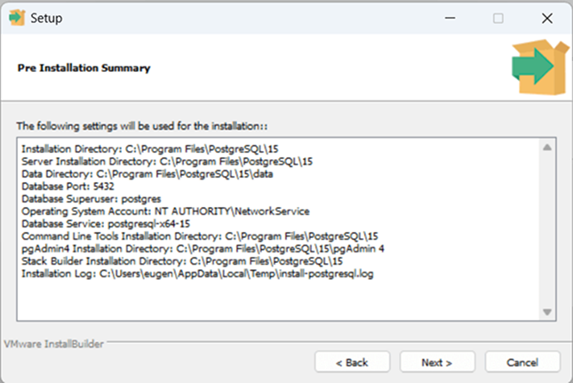И если нас все устраивает, то можно нажать на кнопку Next, и начнется установка
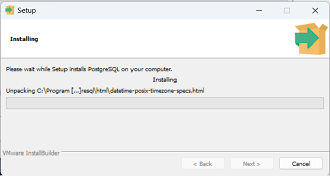И после завершения установки мы увидем следующее окно, и для выхода нажмем на кнопку Finish:
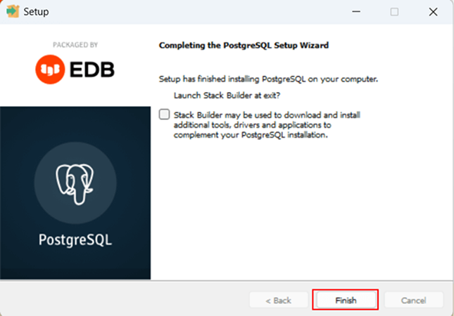Таким образом, сервер PostgreSQL установлен, и мы можем начинать с ним работать.